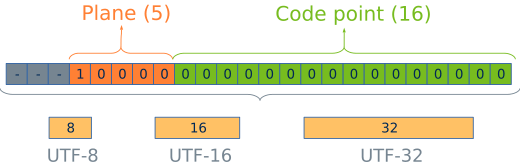
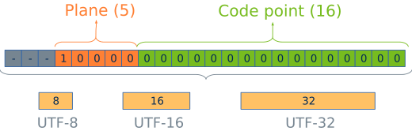
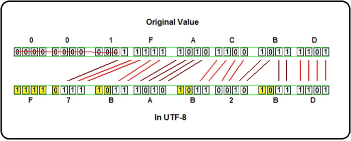
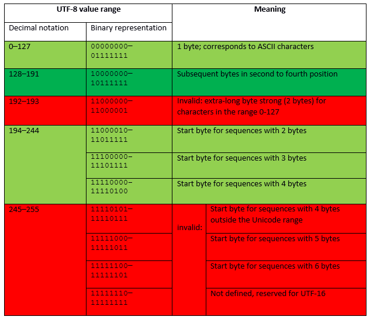
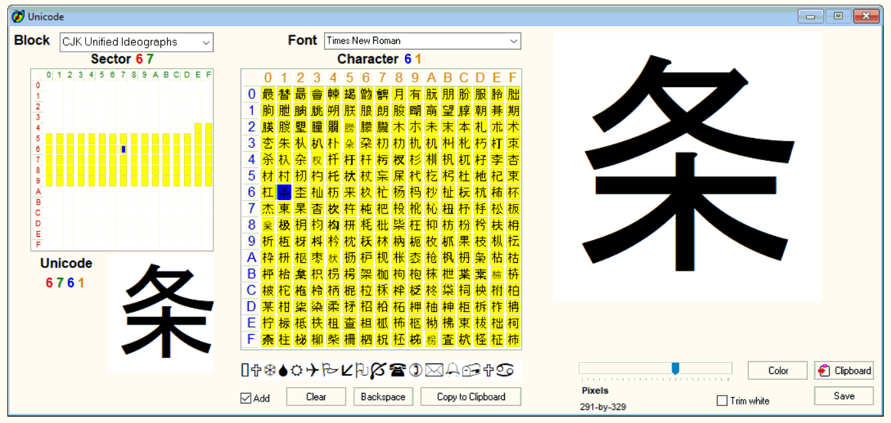

UNICODE چیست؟ | توضیح کاربردی
24 خرداد 1404
در این مقاله استاندارد کاراکتری ASCII را بصورت مفهومی و کاربردی با هم دیگه بررسی میکنیم و انواع اون را یاد میگیریم.


برای استاندارد Encoding اینکودینگ، که در بالا به آن اشاره کردیم، انجمن استانداردهای آمریکا در سال ۱۹۶۰ یک روش کدگذاری 7 بیتی، با نام ASCII که مخفف عبارت American Standard Code for Information Interchange است را معرفی کرد.
در آن زمان، مجموعه کاراکترهای ASCII شامل 128 کاراکتر (7 بیت) که بیشتر مخصوص زبانهای لاتین بود، تعریف گردید.
در دهه ۱۹۸۰، تصمیم بر این شد که در مجموعه کاراکتر ASCII به جای 7 بیت، از یک بایت کامل (یعنی 8 بیت)، برای کدگذاری استفاده شود. لذا تعداد کاراکترها به 256 عدد میرسید. بر این اساس، کاراکترهای بعد از 127 تا 255 نیز، به عنوان کدهای رزرو شده در نظر گرفته شدند و زبانهای دیگر، عموما در این بازه قرار میگرفتند.
اما در این محدوده بین زبانهای مختلف، استاندارد واحدی وجود نداشت و هر زبانی، کد مختصِ الفبایِ خودش را نشان میداد. به عبارت دیگر کد 200 در یک زبان، حرف متفاوتی را در زبان دیگر برمیگرداند. در نتیجه، نیاز به استاندارد واحدی بود تا ضمن سازگاری با تمامی زبانها، کدهای منحصر به فردی را برای هر کاراکتر در نظر بگیرد.
در ابتدا دو تلاش مستقل برای ایجاد مجموعه کاراکتر های واحد صورت گرفت:
استاندارد “ISO-10646” پروژه سازمان بین المللی استاندارد بود.
پروژه بعدی Unicode نام داشت که توسط کنسرسیومی به نام کنسرسیوم یونیکد سازماندهی میشد.
داشتن دو نوع استاندارد مطمئنا چیزی نبود که بتوان آن را استاندارد واحدی نامید. ISO و Unicode این مطلب را دریافتند و تصمیم گرفتند در سال ۱۹۹۱ به یکدیگر بپیوندند.
استاندارد Unicode و ASCII هر دو از استاندارد هایی هستند که برای Encoding متن ها استفاده می شوند. در واقع این دو استاندارد در برنامه نویسی باعث می شوند تا بین زبان های مختلف ارتباط برقرار شود.
همانطور که در بالا اشاره شد، Unicode به سه روش کد گذاری را انجام می دهد که عبارتند از:
تفاوت این روش های کد گذاری، در نحوه ارایه حروف، اعداد و علائم، بین زبان های کشورهای مختلف است. به طوری که نحوه ارایه کاراکتر ها در یک کشور با کشور دیگر متفاوت است.
 

در پاسخ به پرسش utf-8 چیست بایستی گفت، اولین بار بهطور رسمی در کنفرانس USENIX در سال 1993 معرفی شد. در حال حاضر UTF-8 ، غالبترین روش کدگذاری کاراکتر در میان وبسایتها است.
کدگذاری Utf-8، روشی است که قابلیت کدگذاری تمامی کاراکترهای موجود، و یا به عبارتی تمامی Point Codes های موجود در Unicode را دارد.
این استاندارد UTF-8، همانطور که گفته شد الگوریتمی است که اعداد مربوط به Point Codes را به باینری تبدیل میکند، بهطوری که بتوان آنها را بر روی دیسک ذخیره کرد. 
در بیان اینکه تفاوت بین UTF-16 و UTF-32 با utf-8 چیست این نکته را باید گفت که UTF-8، نیاز به فضای اضافی برای ذخیره کد ASCII زبان انگلیسی ندارد، و بیشتر زبان های غرب اروپا را پوشش میدهد.
برای زبان های چینی، ژاپنی و کره ای نیز، به 50 درصد فضای بیشتر نیاز دارد، و برای زبان یونانی و سریلیک، به 100 درصد فضای اضافه تر نیازمند است.
در مقابل، UTF-16 به فضای اضافه برای زبان های چینی، ژاپنی، کره ای نیاز ندارد، ولی برای زبان های ASCII و زبان های غرب اروپا ، یونانی و سریلیک نیاز به 100 درصد کل فضای خود دارد.
استاندارد UTF-32 ، طول ثابتی دارد و بیشترین فضا را اشغال میکند. با توضیحات ارایه شده در مورد Unicode چیست و همینطور utf8 چیست، میتوان دریافت چرا UTF-8 پرکابرد ترین روش کد گذاری در فضای وب است و محبوبیت آن نیز روز به روز در حال افزایش است.
این مورد حتی در هاست ایمیل نیز مهم است بهطوری که عدم انتخاب استاندارد مناسب، می تواند باعث ناخوانا بودن ایمیل های شما شود.
در نظر داشته باشید با وجود وب سایت های چند زبانه، سازگاری وب سایت با استانداردهای موجود، مهم ترین عاملی است که در انتخاب نوع روش کد گذاری خود باید آن را در نظر بگیرید.
در این مقاله به بررسی مفاهیم ذکر شده و تفاوت هایی که بین آنها وجود دارد میپردازیم.
در این مقاله روش کرک فایل های فشرده(الگوریتم ZIP-Crypto) با ابزار Bkcrack یاد میگیریم.